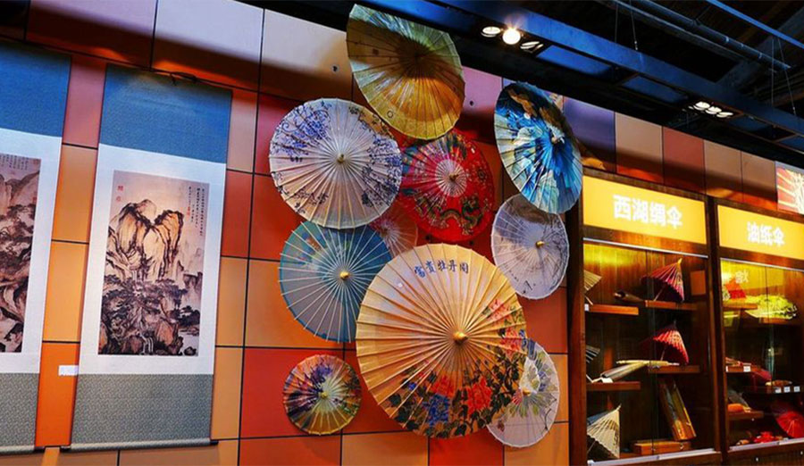

中国传统文化在线学习传播平台由文化部民族民间文艺发展中心和通桥国际教育集团（TBI）合作设立， 顺应全球化、互联网+、文化+的趋势，用更多的智慧、更多的努力和更多的行动， 创立一个开放、平等、共赢、可持续、国际化的文化教育交流平台。本站以中国丰富的传统文化资源为依托，以中美青少年的文化研习、互动交流、传播传承为主要方式， 从多元文化中寻找和平之力、发展之力、创新之力和未来之力。用文化的力量连接世界，指引未来。
该数据库以传统文化艺术基础资源为对象，以海量信息资源的管理与服务为导向，以文化艺术资源标准化建设为支撑，以前沿技术为基础，构建起了一个集数字资源著录、管理与社会应用于一体的数据库工作体系。 该数据库的建设得到文化部“国家文化资源信息平台建设”、科技部“中国民族民间文艺基础资源拯救”、“中国民族民间文化重要品种空间信息整编”等一系列项目的支持。学术界、教育界的众多专家学者参与了数据库架构的搭建、文化资源的整备和系统的研发。 该数据库将为我国传统文化的学术研究、教育传承、文化创造和公众提供基础性资源服务，为全社会文化资源高效共享提供基础。 该数据库尚处于持续性建设中，将遵循边建设边服务的原则，不断完善和优化数据库资源和服务。
中国传统文化在线学习传播平台由文化部民族民间文艺发展中心和通桥国际教育集团（TBI）合作设立， 顺应全球化、互联网+、文化+的趋势，用更多的智慧、更多的努力和更多的行动， 创立一个开放、平等、共赢、可持续、国际化的文化教育交流平台。本站以中国丰富的传统文化资源为依托，以中美青少年的文化研习、互动交流、传播传承为主要方式， 从多元文化中寻找和平之力、发展之力、创新之力和未来之力。用文化的力量连接世界，指引未来。